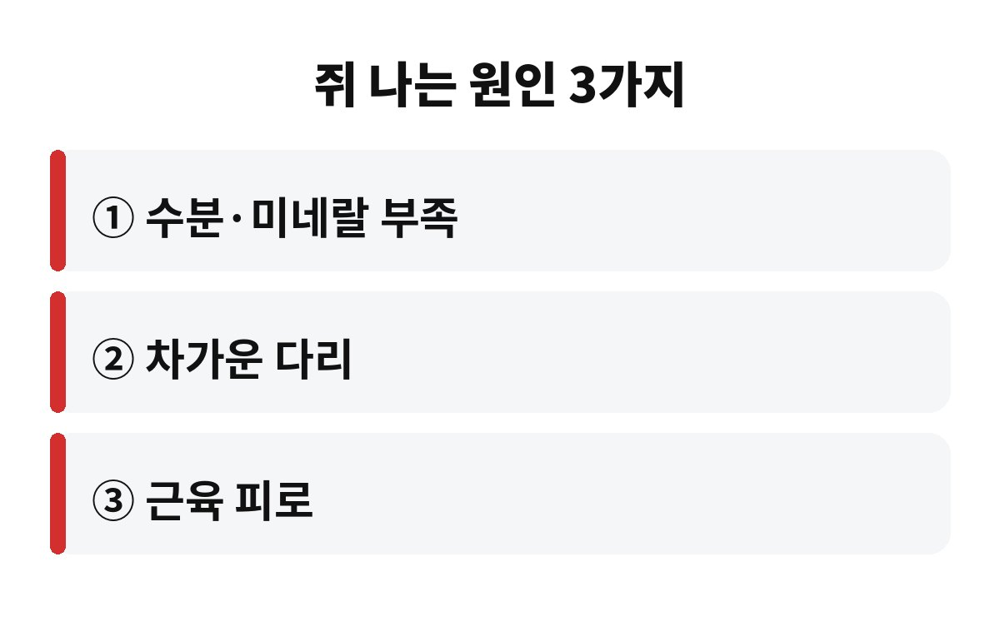
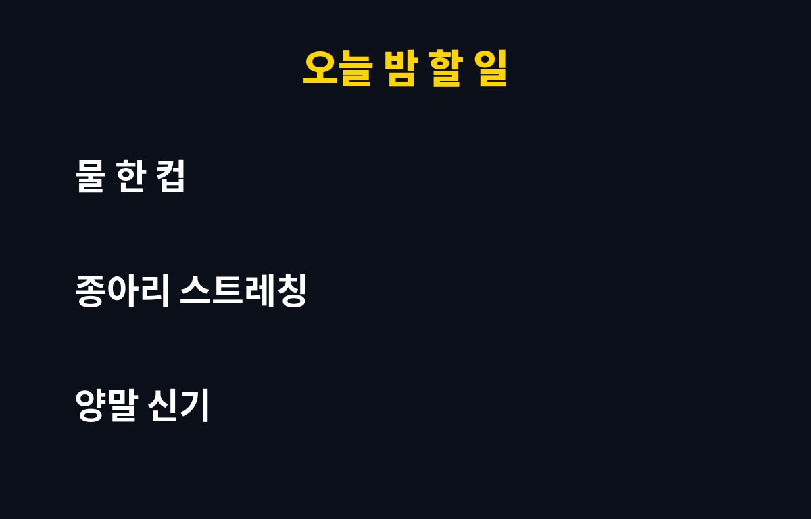

종아리 쥐는 대부분 수분·미네랄 부족, 차가워진 다리, 근육 피로라는 3가지 원인에서 시작되고, 10월부터 밤에 더 자주 올라옵니다. 자다가 쥐가 나서 깬 적이 있는 40·50대라면, 단순한 일시 현상인지 몸이 보내는 경고인지 궁금하시죠?
종아리 쥐가 한 번 나면 그날 잠은 거의 끝이에요. 비명 지르며 일어나 다리를 붙잡고 있다가, 겨우 풀리고 나면 다시 잠들기도 어렵죠. 오늘은 종아리 쥐가 왜 하필 가을밤에 늘어나는지, 오늘 밤부터 해볼 수 있는 방법이 뭔지 쉽게 풀어볼게요.
쥐는 근육이 내 뜻과 상관없이 갑자기 꽉 수축해서 풀리지 않는 상태예요. 낮에는 걷고 움직이면서 근육이 계속 풀렸다 조여졌다 하지만, 잠들면 다리가 장시간 같은 자세로 가만히 있게 되죠. 특히 발끝이 아래로 뻗은 자세로 자면 종아리 근육이 짧아진 채로 오래 있어서 쥐가 나기 쉬워요.
여기에 밤에는 몸속 수분이 낮보다 줄어든 상태이기도 해요. 자는 동안 땀도 나고 숨으로도 수분이 빠져나가니까요. 그래서 새벽에 쥐가 나는 분들이 많은 겁니다.
첫 번째는 수분과 전해질 부족이에요. 칼슘, 마그네슘, 칼륨 같은 미네랄은 근육이 수축하고 풀리는 신호를 조절합니다. 이게 모자라면 근육이 예민해져서 작은 자극에도 확 조여져요. 요즘처럼 날씨가 선선해서 물을 덜 마시게 되는 계절엔 특히 놓치기 쉬워요.
두 번째는 다리가 차가워지는 것입니다. 기온이 떨어지면 혈관이 좁아지고 근육도 굳어요. 이불 밖으로 발이 나와 있거나 맨발로 자면 쥐가 나기 좋은 환경이 되죠. 세 번째는 근육 피로예요. 낮에 운동을 갑자기 많이 했거나, 하루 종일 서 있었거나, 반대로 거의 안 움직여서 근육이 굳어 있어도 쥐가 올라옵니다. 많은 분이 운동을 많이 해서만 난다고 생각하지만, 의외로 운동 부족이나 오래 앉아 있는 습관도 원인이에요.
그러니까 쥐가 자주 난다고 해서 무조건 큰 병을 걱정할 필요는 없지만, 그렇다고 매번 "나이 들어서 그렇지" 하고 넘기기엔 이유가 꽤 분명한 경우가 많아요. 하루 물 마시는 양, 저녁 식단, 자는 자세, 이불 속 온도만 점검해 봐도 원인을 찾는 경우가 적지 않습니다. 특히 술을 마신 날이나 카페인을 많이 마신 날에는 수분이 더 빠져나가서 쥐가 더 쉽게 올라오니 참고해 보세요.

당황하지 말고 쥐가 난 쪽 무릎을 펴고 앉은 채로 발끝을 몸 쪽으로 천천히 당겨주세요. 손으로 발가락을 잡아당기면 더 좋아요. 종아리 근육이 늘어나면서 수축이 풀립니다. 세게 확 잡아당기면 오히려 근육이 다칠 수 있으니 천천히, 숨을 내쉬면서 하는 게 포인트예요.
풀린 뒤에는 종아리를 손으로 가볍게 주물러서 혈액이 돌게 해주세요. 따뜻한 수건을 올려두는 것도 도움이 됩니다. 통증이 남아도 하루 이틀이면 보통 가라앉아요.
대부분은 생활 습관으로 좋아지지만, 아래 경우라면 한번 진료를 받아보는 게 좋아요.
- 일주일에 여러 번 반복해서 쥐가 나는 경우
- 한쪽 다리만 붓거나 색이 변하고 아픈 경우
- 당뇨, 신장 질환, 갑상선 질환이나 혈압약·이뇨제 복용 중인 경우
- 쥐가 풀려도 저림이나 힘 빠짐이 계속되는 경우
혈액순환 문제나 약 때문에 전해질이 빠지는 경우도 있어서, 습관만 고쳐도 계속된다면 원인을 확인해보는 게 후회를 줄이는 길이에요.
첫째, 자기 전에 물 한 컵을 마셔요. 너무 많이 마시면 화장실 때문에 깨니 적당히요. 둘째, 잠들기 전에 종아리 스트레칭을 짧게 해주세요. 벽을 짚고 한쪽 다리를 뒤로 뻗어 종아리를 늘려주면 됩니다. 셋째, 발이 차지 않게 양말이나 두꺼운 이불로 보온해 주세요. 넷째, 바나나, 시금치, 견과류처럼 미네랄이 든 음식을 평소 식단에 챙기면 도움이 됩니다.

여러분은 어떠세요? 자다가 쥐 때문에 깬 적, 한 번쯤 있으시죠? 댓글로 나만의 대처법을 알려주세요. 도움이 됐다면 구독과 공감도 부탁드려요!
※ 이 글은 일반적인 건강 정보이며 진단·치료를 대신하지 않습니다. 증상이 반복되면 전문의 상담을 권장합니다.